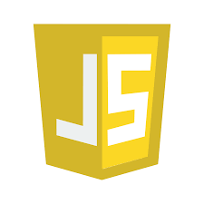
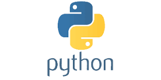

Generally, programming is the practice of crafting instructions for computers to perform tasks. It involves utilizing programming languages such as Python, Java, and C++, each with its syntax and application. Programmers employ algorithms to solve a wide range of problems, from basic arithmetic to intricate data analysis. Debugging, the process of identifying and rectifying errors, is a fundamental aspect of programming. Version control systems like Git facilitate the management of code changes across collaborative projects. Object-oriented programming organizes code into reusable components, enhancing efficiency and readability. Ultimately, programming fuels innovation in technology, driving advancements that shape our digital landscape.
Python is a high-level, interpreted programming language known for its simplicity and versatility. Created by Guido van Rossum and first released in 1991, Python emphasizes code readability and ease of use, making it popular among beginners and experienced developers alike.
HTML (Hypertext Markup Language) is the standard markup language used to create web pages and applications. Developed by Tim Berners-Lee in the late 1980s, HTML provides the structure and content of web documents, defining elements such as headings, paragraphs, links, and images.
javaScript is a versatile, high-level programming language primarily used for web development. Developed by Brendan Eich in 1995, JavaScript allows for dynamic, interactive behavior within web pages. It runs on virtually all modern web browsers and can be integrated with HTML and CSS. JavaScript facilitates tasks such as DOM manipulation, event handling, and asynchronous communication, enabling the creation of responsive and feature-rich web applications.
 